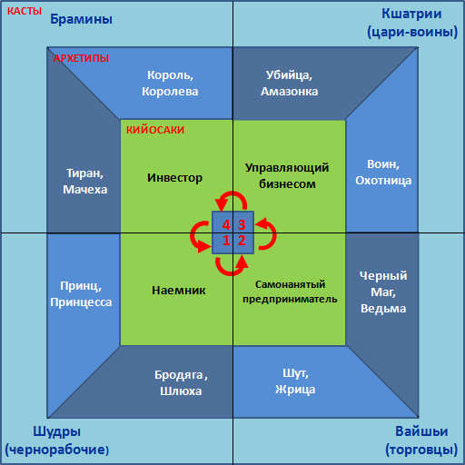

Денежный интеллект 4Q
видеозапись мастер-класса
Задавались ли Вы когда-нибудь вопросом: «Почему я столько всего изучаю, а изменения в жизни происходят очень медленно?» Особенно досадно, когда Вы видите как кто-то, кто начал позже Вас, растет намного быстрее...
Ну или, может, Вы не считаете, что развиваетесь медленно. Но точно знаете, что могли бы расти значительно быстрее! Как будто где-то в голове нужно найти рычаг, чтобы переключиться на следующую передачу...
Так почему быстрого роста не происходит?
Ответ очень простой - «технических» навыков и знаний не достаточно, если парадигма мышления остается прежней.
Хотите значительных изменений - измените парадигму мышления. Остальные навыки тут же подтянутся. Причем ровно те, которые нужны на этом этапе.
Как это сделать? С этого момента давайте поподробнее…
4 ступени развития бизнесмена (х3)
1) Вам наверняка знакомы 4 квадранта Кийосаки, описывающие развитие человека в бизнесе? («Наемник», «Предприниматель», «Управляющий», «Инвестор»?
2) А также, скорее всего, Вы слышали о 4-х кастах древнеиндийской культуры: Шудры, Вайшьи, Кшатрии, Брамины?
3) И, может быть даже Вам знакомы 4 основных архетипа (известных как «Путь героя»), через которые проходит человек по мере своего развития: Принц, Шут, Воин, Король.
Примечательно, что все эти четырех-квадрантные системы развития, возникшие в совершенно разных культурах, описывают один и тот же путь развития человека от уровня «Бегинера» до «Императора». Но еще более интересно то, что их этапы совпадают практически полностью. И каждый этап - это своя парадигма мышления.
Что можно делегировать своему начальнику?
Например, «Наемник» (он же «Принц»/«Шудра») - это мышление максимально освобожденное от личной ответственности за собственный результат. Можно сказать, он делегировал ее (личную ответственность) своему начальнику. И морально ему это удобнее. И пока в его парадигме этот принцип главный, какие бы навыки он не осваивал, роста не будет.
Следующий этап - «Самонанятый предприниматель» (парадигма «Шута» по архетипам и «Вайшьи» по кастам). Он знает, как получить результат и обладает качествами «Черного мага» (теневая сторона архетипа), которые открывают ему способности, морально недоступные Наемнику. Он может еще немного работать по найму, но уже ведет «свою игру» и движется к своей цели.
Однако для перехода к зрелому бизнесмену («Воину»/«Кшатрию»), способному управлять бизнесом, ему не хватает еще двух вещей… Опять-таки, на уровне морального роста и парадигмы мышления.
Квантовый скачок в развитии
Наверняка Вы замечали, что иногда Вы учитесь очень быстро и легко, а иногда медленно.
Для того чтобы этот рост произошел, не так важно, на какой из 4-х ступеней Вы находитесь фактически. Важно, с какой ступени Вы можете мыслить. Потому что когда мышление приковано к определенному уровню, то чему бы вы ни учились, изменения впринципе не могу поизойти. Ваша парадигма просто не позволяет нужному поведению проявиться, а все новые знания просто складируются в памяти.
Но когда мышление принимает новую парадигму - созревает, навыки «вдруг» начинают развиваться сами легко и быстро - появляются нужные книги, нужные люди, нужные тренинги… И оттуда ассимилируются только нужные Вам сейчас знания. Это и создает скорость. Плюс, Вы начинаете уметь использовать чужие руки и головы для достижения своих результатов. И «вдруг» Вы замечаете, что за месяц прошли путь, на который раньше у Вас уходил целый год…
Как это применить на практике?
В своем развитии я периодически замечал, что возникают какие-то «невидимые барьеры», которые мешали мне выйти на следующий уровень, хотя и знаний и ресурсов было достаточно. Как будто я морально был не готов к нему. И я интуитивно пытался нащупать то, что нужно изменить в своей голове...
При переходе на третий этап (парадигма «управляющего»/«воина»/«кшатрия»), который был самой сложной трансформацией, я заметил интересные закономерности... И тогда у меня сложилась у меня картинка из 3-х квадрантных систем, которые раньше я воспринимал чисто как психологическую теорию.
Обнаружив ключевые различия между этапами, я понял как именно меняется парадигма и какие качества личности являются ключевыми. Иными словами, что конкретно нужно сделать в своей голове, что бы выйти на новый социальный статус и поднять свой бизнес. И стоило сделать этот «маленький удар молоточком на 4999$», как изменения в бизнесе начали расти лавинообразно…
В тексте это не расскажешь, не покажешь и, тем более, не передашь парадигму. Поэтому я решил подробно раскрыть эту тему на мастер-классе «Денежный интеллект - 4Q», чтобы Вы получили четкое представление о том, что конкретно Вам нужно сделать для перехода на следующий этап.
Если развитие в бизнесе для Вас актуально, обязательно приходите - это будет очень полезная инвестиция Вашего времени.
Программа мастер-класса
1. Четыре квадранта Кийосаки:
- Как перейти из наемного работника в предпринимателя
- Как перестать работать в бизнесе и начать работать над бизнесом (переход в управляющего)
- Как перестать работать вообще и сделать так, чтобы Ваши деньги работали на Вас (переход в инвестора)
2. Кийосаки + Архетипы
- Какие личностные качества необходимо развить в себе для осуществления каждого перехода?
- Кто Вы сейчас: «Принц» / «Шут» / «Воин» / «Король» или «Бродяга» / «Черный маг» / «Убийца» / «Тиран»?
- Какой потенциал в себе Вы просто не используете, или какие теневые аспекты Вас тормозят?
3. Что знали индусы об управлении людьми тысячи лет назад?
- Четыре касты как система управления
- Как Брамины пришли в чужой монастырь со своим уставом, подвинули Кшатриев и стали над всеми?
- В чем управляющая сила знания, и как Вы можете это сделать в наше время в Вашем бизнесе?
4. Внедряем психологию в бизнес
- Что нужно изменить в себе, чтобы уже сейчас выйти на новый социальный статус?
Подсказка: все начинается не с того, что вы имеете и делаете, а с того, кто Вы. Как прямо сейчас стать тем, кем Вы хотите быть?
- Для тех, кто считает себя тормозом: подробный пошаговый план.
- Как управлять миром, управляя собой. И что нужно, чтобы начать управлять людьми прямо сейчас.
P.S. Эту программу два года назад я мечтал пройти сам. ...Но пришлось собирать материал по крупицам из разных мест и тестировать все на практике. Вам повезло, Вы можете пройти этот путь за 3 часа.
Стоимость
4700 руб. - электронная версия, доставка через интернет.
Электронную версию Вы сможете скачать сразу после оплаты, ссылка для скачивания будет отправлена на Ваш e-mail.
Размер электронного архива: 2,5 Гб.
Гарантии
Если Вам не понравится приобретенный тренинг по любой причине, мы вернем Вам деньги по первому Вашему требованию. Сразу и без лишних разговоров. При этом, все материалы Вы можете оставить у себя.
Для доставки тренинга нам необходимо знать Ваши контактные данные. Вся информация о Вас будет защищена и недоступна для третьих лиц.